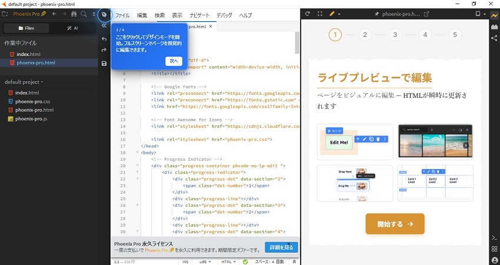
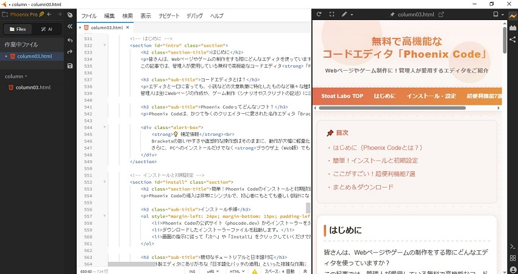
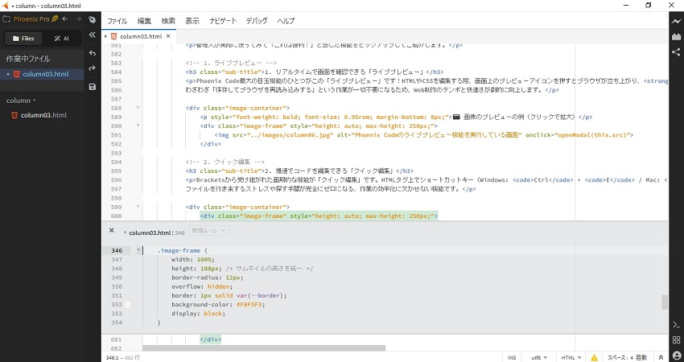
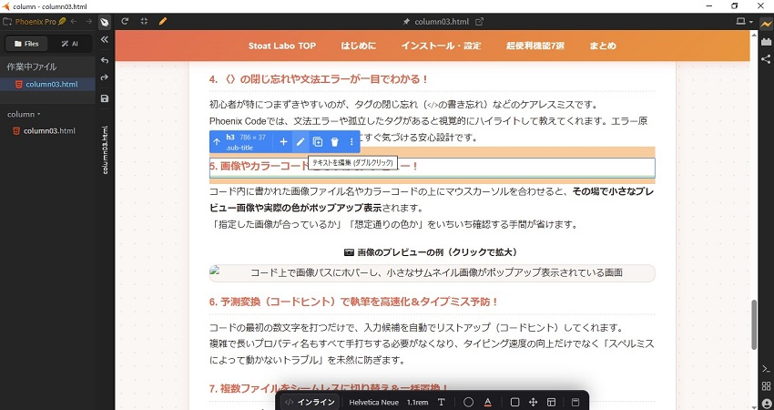
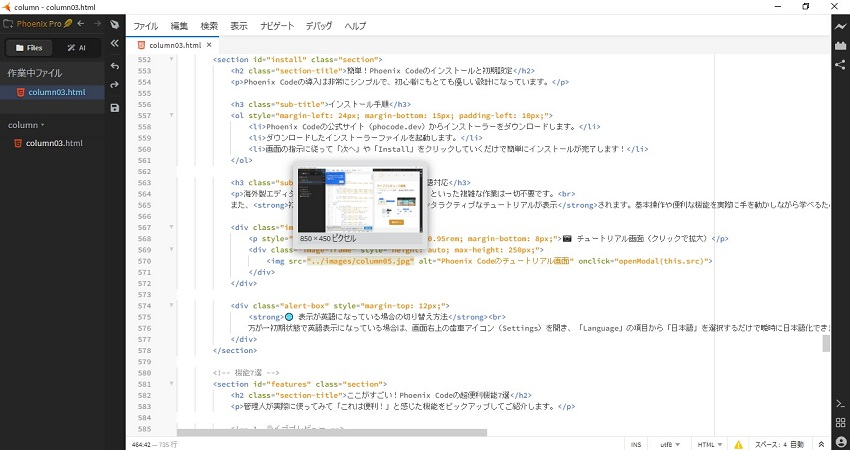

Webページやゲーム制作に！管理人が愛用するエディタをご紹介
皆さんは、Webページやゲームの制作をする際にどんなエディタを使っていますか？
この記事では、管理人が愛用している無料で高機能なコードエディタ「Phoenix Code（フェニックスコード）」の魅力と便利な機能をご紹介します！
エディタと一口に言っても、小説などの文章執筆に特化したものなど様々な種類があります。その中でも「コードエディタ」は、プログラムのコードを書くための機能に特化したエディタのことです。
管理人は主にWebページの作成や、ゲーム制作（シナリオやスクリプトの記述）に活用しています。
Phoenix Codeは、かつて多くのクリエイターに愛された名作エディタ「Brackets（ブラケッツ）」の思想を受け継ぎ、次世代Web標準に合わせてリビルドされた完全無料のオープンソースコードエディタです。
Phoenix Codeの導入は非常にシンプルで、初心者にもとても優しい設計になっています。
海外製エディタにありがちな「日本語化パッチの適用」といった複雑な作業は一切不要です。
また、初回起動時には画面上で分かりやすいインタラクティブなチュートリアルが表示されます。基本操作や便利な機能を実際に手を動かしながら学べるため、初めてコードエディタを使う方でも迷わずスムーズにスタートできます！
📷 チュートリアル画面（クリックで拡大）

管理人が実際に使ってみて「これは便利！」と感じた機能をピックアップしてご紹介します。
Phoenix Code最大の目玉機能のひとつがこの「ライブプレビュー」です！HTMLやCSSを編集する際、画面上のプレビューアイコンを押すとブラウザが立ち上がり、ファイルを保存することなく、入力したコードがリアルタイムで画面に反映されます。
わざわざ「保存してブラウザを再読み込みする」という作業が一切不要になるため、Web制作のテンポと快適さが劇的に向上します。
📷 ライブプレビューの例（クリックで拡大）

Bracketsから受け継がれた画期的な機能が「クイック編集」です。HTMLタグ上でショートカットキー（Windows: Ctrl + E / Mac: Cmd + E）を押すと、別のファイルや離れた位置にあるCSSの場所に移動することなく、その場にインライン（小窓）で関連するスタイルが表示されて直接編集できます。
ファイルを行き来するストレスや探す手間が完全にゼロになる、作業の効率化に欠かせない機能です。
📷 クイック編集の例（クリックで拡大）

Phoenix Codeならではの強力な機能が「デザインモード」です。
テキストを直接書き換えるだけでなく、画面上の要素をマウス操作で直感的に調整したり、要素ごとにコピー＆ペーストするといったことができます。「コードでの細かい調整」と「視覚的なレイアウト調整」をシームレスに行えるため、デザインの微調整が格段にラクになります。
📷 デザインモードの例（クリックで拡大）

Ctrl + S / Cmd + S）し、右上の雷マーク（Live Preview）を一度クリックしてOFFにし、再度ONにして接続し直すと解消されます。
初心者が特につまずきやすいのが、タグの閉じ忘れ（</>の書き忘れ）などのケアレスミスです。
Phoenix Codeでは、文法エラーや孤立したタグがあると視覚的にハイライトして教えてくれます。エラー原因を探す無駄な時間を減らし、ミスにすぐ気づける安心設計です。
コード内に書かれた画像ファイル名やカラーコードの上にマウスカーソルを合わせると、その場で小さなプレビュー画像や実際の色がポップアップ表示されます。
「指定した画像が合っているか」「想定通りの色か」をいちいち確認する手間が省けます。
📷 画像のプレビューの例（クリックで拡大）

コードの最初の数文字を打つだけで、入力候補を自動でリストアップ（コードヒント）してくれます。
複雑で長いプロパティ名もすべて手打ちする必要がなくなり、タイピング速度の向上だけでなく「スペルミスによって動かないトラブル」を未然に防ぎます。
画面左側にプロジェクトのフォルダ構造がツリー表示され、クリックひとつで開きたいファイルを瞬時に切り替えられます。
さらに、複数のファイルを横断して一気に「文字の検索・置換」ができるため、キャラクター名やCSSのクラス名を一斉変更したい時にも大活躍します。
Phoenix Codeは、直感的に使える優れた操作性とWeb制作に特化した便利機能に加え、チュートリアルやデザインモードといった最新機能がギュッと詰まった非常に快適な無料コードエディタです。
「メモ帳」や標準のテキストエディタでコードを書いている方はもちろん、直感的なエディタをお探しの方は、ぜひ一度Phoenix Codeの快適さを体験してみてください。制作のスピード感と楽しさが劇的に変わりますよ！